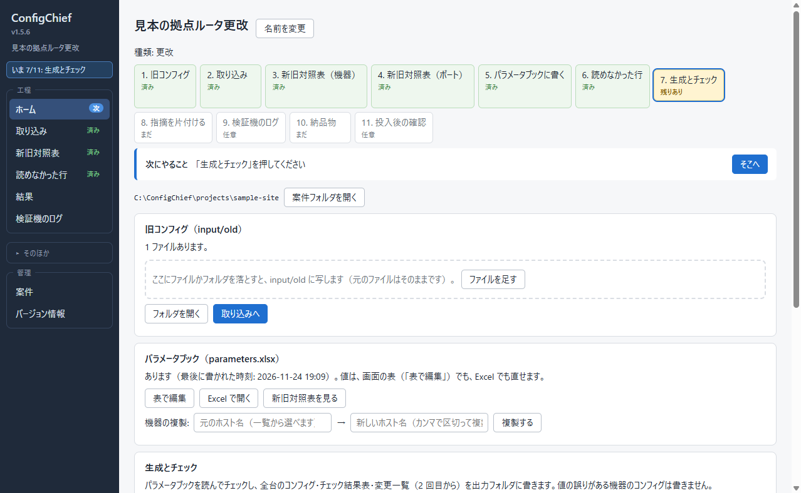
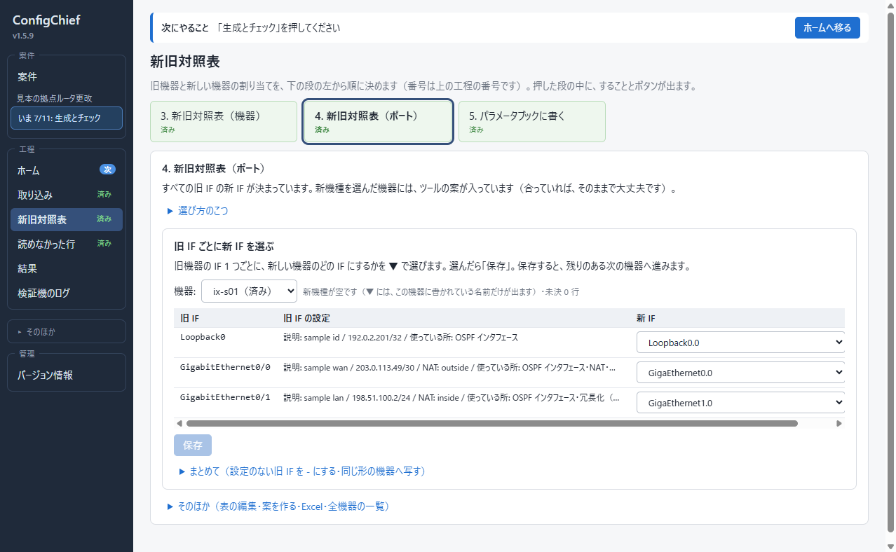
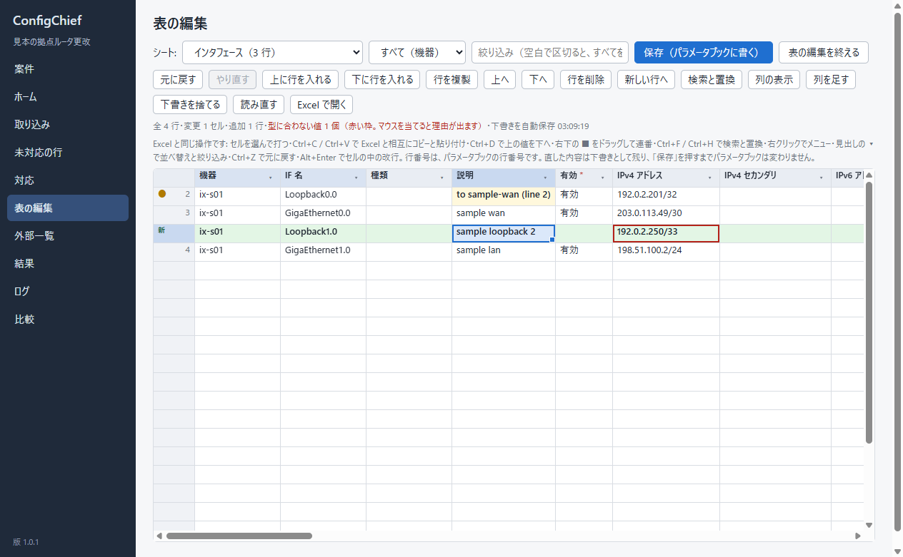
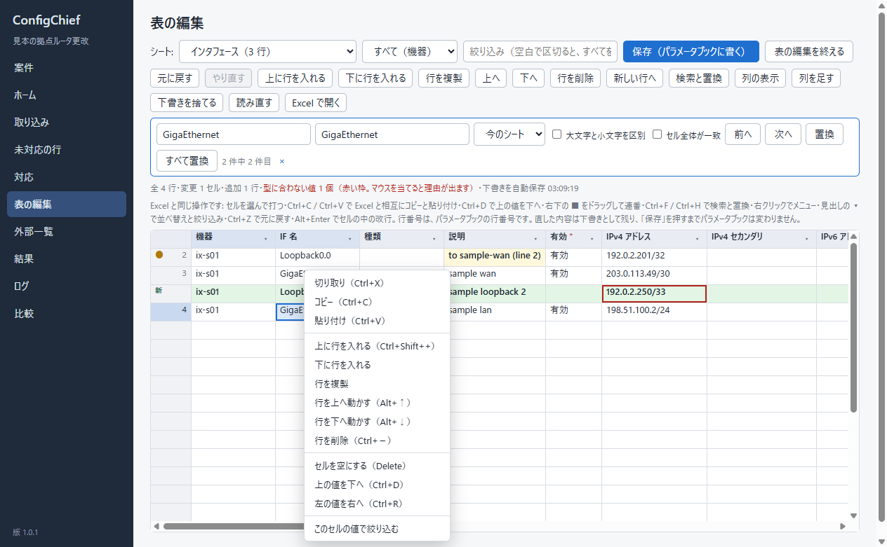

ConfigChief の使い方
ConfigChief は、ネットワーク機器のコンフィグを読んでメーカーによらない表（Excel のパラメータブック）にし、その表からコンフィグ・チェック結果表・納品用のシートを出すツールです。
- exe 1 つで動きます。インストールは要りません。外部と通信しません
- 同じ入力からは、いつも同じ出力になります
- 読めなかった行は「未対応」として必ず一覧に出します（黙って落としません）
- 対応しているメーカーは Cisco IOS / IOS-XE（ルータ、内蔵スイッチ付きの小型ルータ、Catalyst 系のスイッチ）、NEC UNIVERGE IX（ルータ）、NEC QX シリーズ（スイッチ）です。メーカーごとの読み方・書き方は「メーカーパック」というテキストのファイルにあり、足すことができます（パックの書き方）
- 対応している設定: 機器の基本（ユーザ・遠隔ログイン・NTP・syslog・SNMP〈版 3 を含む〉・バナー・ログ）、インタフェース、VLAN・スイッチポート・LAG・スパニングツリー・ブリッジ・ポートミラー、スタティック経路・VRF・OSPF・BGP・VRRP / HSRP、経路制御の方針（ルートマップ・ポリシールーティング・AS パスとコミュニティのリスト）、ACL・プレフィックスリスト・NAT・回線監視、PPPoE・DHCP、IPsec（IKEv1・IKEv2）・GRE・EtherIP・L2TP（LNS・LAC・L2TPv3）、QoS、IPv6（アドレス・RA・DHCPv6・経路・フィルタ・OSPFv3・BGP・IPv6 の網のトンネル）。メーカーに機能が無いものや、パックが読まない書き方もあります（11 章と、各パックの README）
大事な注意: 同梱のパックは、メーカーが公開しているコマンドリファレンスを読んで作りました。実機の出力では確かめていません。 生成したコンフィグは、必ず検証機に流して確かめてから使ってください。何を確かめていないかは、各パックの README（Cisco IOS・NEC IX・NEC QX）の「確かめていないこと」にあります。
ほかのページ: シートと列の一覧 ・ チェックの一覧 ・ パックの書き方
1. 起動する
ConfigChief.exe を置いて、ダブルクリックします。画面の表示には WebView2 ランタイム（Windows 11 には初めから入っています）が要ります。
- 署名の無い exe なので、初めて起動するときに Microsoft Defender SmartScreen の警告が出ることがあります。「詳細情報」→「実行」で起動できます。取った exe は、リリースのページの SHA-256 と比べて確かめられます（PowerShell:
Get-FileHash ConfigChief.exe） - 何も付けずに起動すると、画面が開きます。案件フォルダを付けて起動すると、その案件を開きます
- コマンドを付けて起動すると、窓を開かずにそのコマンドを行って終わります（8 章）
- 書き込むのは、案件フォルダの中と、
%APPDATA%\ConfigChief（最近使った案件の一覧と、画面の作業フォルダ）だけです。レジストリは書きません

2. 案件フォルダ
1 つの案件が 1 つのフォルダです。中身はテキストと Excel だけなので、共有フォルダや git にそのまま置けます。
案件フォルダ/
project.yaml 案件の設定
parameters.xlsx パラメータブック（値の正本）
input/old/ 旧機器のコンフィグ（1 台 1 ファイル。端末ログのままでも読めます）
input/new/ 手で書いた新コンフィグ（使うときだけ）
input/customer/ 他のシステムなどが出力した一覧（xlsx・xls・csv）
input/logs/ 検証機・本番の投入ログ、投入後の設定ログ
extra/ 追加コンフィグ（パックが書けない設定を、人が書いて差し込む）
mappings/ 外部一覧の、列の対応
rules/ 案件ごとのチェックのルール
templates/ 納品用パラメータシートのひな形
packs/ 案件専用のメーカーパック（同じ ID の同梱パックより優先）
state/ 判定・承認・控え・操作の記録
out/<日時>/ 実行 1 回ごとの出力（コンフィグ、レポート）- ツールが書き換えるのは、パラメータブック（はっきり操作したときだけ。書く前に
state/backup/へ控えを取ります）と、state/・out/だけです。input/とextra/は読むだけです - パラメータブックを Excel で開いたままだと書けません。「Excel を閉じてください」と出たら、閉じてからやり直します（画面の表の「保存」も同じです。直した内容は下書きとして残っています）
- 文字コードは UTF-8 と Shift_JIS を自動で見分けます
3. 更改の流れ（機器の入れ替え。同じメーカーでも別メーカーでも同じ）
- 案件を作り、旧コンフィグを置く: 画面の「案件」で作るか、
init。旧機器のコンフィグをinput/old/に入れます。端末ソフトのログ（show running-configやdisplay current-configurationを打った画面の保存）もそのまま置けます - 取り込む: 画面の「取り込み」か
import。行ごとに、取り込み済み・無視・未対応が色で分かります。パラメータブックができ、「機器対応」のシートに旧機器の行が入ります- メーカーを自動で決められないファイルは、取り込みの画面で、候補からパックを選びます（
import --pack <ID>） - 同じホスト名のファイルが 2 つ以上あるときは、取り込みの画面で、どれを取り込むかを選びます（
import --use <ファイル>）。選ぶまで、そのホスト名のファイルはどれも取り込みません。選んだ結果は案件に残り、後から選び直せます

- メーカーを自動で決められないファイルは、取り込みの画面で、候補からパックを選びます（
- 機器の対応を決める: 「機器対応」に、旧ホスト名ごとの新ホスト名・新メーカー（パックの ID:
cisco_ios・nec_ix・nec_qx）と、分かれば「新機種」を書きます。画面の表（「対応」の画面の「機器対応を表で編集」。新メーカーは一覧から選べます）でも、Excel でも書けます - IF の対応を決める: もう一度「取り込み」をすると、新ホスト名を書いた機器の IF が「IF 対応」（旧 IF 名 → 新 IF 名）に入ります。新 IF 名には、次の順で案が入ります（「根拠」の列に、どの案かが出ます）
- 「新機種」に、パックが知っている機種の ID を書いた機器は、その機種のポートの並びから新 IF 名を割り当てます。内蔵スイッチのポートはスイッチのポートへ、L3 のポートはそれ以外のポートへ、名前の順に並べます。新しい機種に同じ名前のポートがあれば、その名前のままにします。止めてあるポートは
-（持っていかない）。VLAN の IF・サブ IF・ループバック・トンネル・LAG の IF・PPPoE の論理 IF も、新しいメーカーの名前の形にします - 新コンフィグ（
input/new/）に同じ名前の IF があれば、その名前 - どちらも無ければ空です。人が書きます（
-は持っていかない）
- 「新機種」に、パックが知っている機種の ID を書いた機器は、その機種のポートの並びから新 IF 名を割り当てます。内蔵スイッチのポートはスイッチのポートへ、L3 のポートはそれ以外のポートへ、名前の順に並べます。新しい機種に同じ名前のポートがあれば、その名前のままにします。止めてあるポートは
- パラメータブックにする: 「対応」の画面の「対応を当ててパラメータブックに書く」か
book。対応を当てた設計データが、表ごとのシートに入ります。これ以降は、このパラメータブックが値の正本です。値は、画面の「表の編集」でも Excel でも直せます（5 章）
- 未対応の行を片付ける: 画面の「未対応の行」か
judge。同じ形の行をまとめて、「手動で対応」（追加コンフィグに書く）・「対応不要」・「保留」を付けます - 生成とチェック: ホームの「生成とチェック」か
generate。全台のコンフィグ（out/<日時>/configs/）と、チェック結果表（reports/check_results.xlsx・.html）が出ます。値の誤りがある機器のコンフィグは書きません
- 指摘を直すか、承認する: 指摘には、内容と「直し方」が出ます（画面の指摘の詳細と、チェック結果表の「指摘」のシート）。エラーと警告は、値を直すか、理由を付けて承認します。指摘の「このセルを表で開く」を押すと、そのセルを選んだ状態で表の編集が開きます（Excel で直してもかまいません）。未承認の指摘が残っている間は、出力フォルダに
UNVERIFIED.txtが置かれます - 検証機で確かめる: 1 台分を検証機に流し、その端末ログを
input/logs/に置いて、画面の「ログ」かlogs。機器に弾かれた行が一覧に出ます - 変更が来たら: パラメータブックを直して（画面の表か Excel）7 をやり直します。2 回目からは、前回から変わった機器と行の一覧（
reports/changes.xlsx）が出ます - 納品物を出す: ホームの「納品物」か
export。納品用パラメータシートと、相手に渡すパラメータ表が出ます - 投入の後: 投入後の設定のログを
input/logs/に置いて、verify。パラメータブックから作ったコンフィグとの違いが出ます
機種から IF 対応の案を作る
「機器対応」の「新機種」に、パックが知っている機種の ID を書くと、IF 対応の新 IF 名の案を、その機種のポートの並びから作ります。ID は製品の名前ではなく、ポートの並びを言う名前です（数字はポートの数）。
| パック | 機種の ID |
|---|---|
| Cisco IOS | isr-4fe-1fe・isr-8fe-1fe-1ge・isr-xe-8ge-2ge（内蔵スイッチ付きの小型ルータ） |
| NEC IX | ix-1ge-4sw・ix-2ge-8sw（内蔵スイッチ付き）、ix-4ge |
| NEC QX | qx-24ge-4xge・qx-48ge-4xge |
- 旧機器のポートを名前の順に並べ、内蔵スイッチのポートは新しい機種のスイッチのポートへ、L3 のポートはそれ以外のポートへ割り当てます。新しい機種に同じ名前のポートがあれば、その名前のままにします。止めてあるポートは
-（持っていかない）です - VLAN の IF・サブ IF・ループバック・トンネル・LAG の IF・PPPoE の論理 IF も、新しいメーカーの名前の形にします
- 案は、IF 対応に行を足すときにだけ 入ります（すでにある行は変えません）。後から「新機種」を書いた機器は、その機器の IF 対応の行を消してから取り込み直すと、案が入ります
- 案は、人が見て直す前提のものです（アップリンクのポートなど）。ポートの数が足りないときや、当たる名前の形が無いときは、空のままにします
- どの ID がどのポートを持つかは、各パックの README の「機種の定義」の節にあります。ここに無い機種は、案件フォルダのパックに
models.yamlを置いて足せます（パックの書き方）
別メーカーへ書き換えるとき
「機器対応」の新メーカーを変えると、同じパラメータブックから別メーカーのコンフィグが出ます。新しいメーカーで書けないものは、次のように知らせます。どれも黙って落としません。どの指摘にも、画面とチェック結果表に「直し方」が出ます。
| 出方 | 意味 | すること |
|---|---|---|
| G-602（エラー） | 値があるのに、新しいメーカーのパックがその列を書かなかった（新しいメーカーに当たる行が無い、パックが確かめていない） | 持っていかないなら、セルを空にする。別の書き方で持っていくなら、追加コンフィグ（7 章）に書いてからセルを空にする |
| G-603（エラー） | その語（暗号の種類など）が、新しいメーカーに無い | 指摘の文にある、書ける語に直す。その語が要るなら、セルを空にして追加コンフィグに書く |
| G-601（エラー） | 列は書けるが、その値・組み合わせが新しいメーカーで書けない（ポートの番号が機種に無い、機器に 1 つしか持てない値が行ごとに違う、暗号化して保存した形の鍵、など） | 指摘の文に、理由と、書ける値・直し方があります。そのとおり値を直す |
| G-606（エラー） | 新しいメーカーで要る値が空 | 指摘の文にある列に、値を入れる |
| G-614（警告） | パックが、新しいメーカーの書き方に置き換えて書いた（例: QoS の「残りの帯域の %」を「帯域の %」に、Cisco の Vlan10 を NEC IX のポート VLAN に） | 指摘の文で、何をどう置き換えたかを読む。それでよければ承認する。よくなければ値を書き直す |
置き換え（G-614）は、パラメータブックの値を変えません。書き出しのたびに、同じ置き換えをします。メーカーの組み合わせごとの決まりの全部は、新しいメーカーのパックの README（「置き換え」の節）にあります。よくある組み合わせの要点を下に挙げます。
内蔵スイッチ付きの小型ルータ（Cisco）→ NEC IX
NEC IX の内蔵スイッチのポートは、機器の上では IF ではありません（device の下の port <番号>）。表では、パックが付けた名前 <デバイス名>:port<番号>（GigaEthernet2:port1 など）で 1 行ずつ持ちます。この名前はコンフィグには出ません。人が決めるのは、IF 対応の新 IF 名だけです。
| 旧機器 | IF 対応の新 IF 名 | パックの書き方 |
|---|---|---|
スイッチポート（FastEthernet0 など） | <デバイス名>:port<番号> | ポートを VLAN グループに入れます |
Vlan<n>（トランクに通さない VLAN） | ポート VLAN の IF <デバイス名>:<グループ>.0 | その VLAN のアクセスポートを、そのグループの vlan-group に入れます。アドレスはグループの IF に付きます |
Vlan<n>（トランクに通す VLAN） | BVI（BVI0 など） | VLAN ごとのブリッジグループにし、bridge irb enable を書きます |
| トランクのポート | <デバイス名>:port<番号> | 通す VLAN ごとにタグ付きのサブ IF を作り、その VLAN のブリッジグループに入れます |
| WAN のポートとそのサブ IF | L3 のポート（GigaEthernet0.0）、そのサブ IF（GigaEthernet0.1 など） | — |
- 「新機種」に NEC IX の機種の ID（
ix-1ge-4sw・ix-2ge-8sw）を書くと、上の新 IF 名の案をツールが作ります。機種が分かる機器では、ポートの番号と VLAN グループの番号が機種に合うかを確かめます - NEC IX に無い設定は、外して G-614 で知らせます: スパニングツリー（PortFast・BPDU ガードなど）、VLAN の定義と名前、ポートの説明、CDP・LLDP など。ポートセキュリティ・ストーム制御・DHCP スヌーピングなど通信を絞る設定は、外さずに G-602 で知らせます
- 書けないものは止まります（G-601）: モード dynamic のポート、束ね方が on（固定）でない LAG（NEC IX に LACP はありません）、1 つの VLAN グループに 9 つ以上のサブ IF が要るトランク、ポート VLAN の IF にした VLAN を通すトランク（「VLAN の IF を BVI に」と知らせます）
- 細かい決まりは、NEC IX のパックの README の「VLAN とスイッチ」の節にあります
Catalyst 系のスイッチ ⇄ NEC QX
- IF 名: 新しいメーカーの名前にします（QX は
GigabitEthernet1/0/1・Vlan-interface<番号>・Bridge-Aggregation<番号>、Cisco はVlan<番号>・Port-channel<番号>など）。QX へは、「新機種」にqx-24ge-4xge・qx-48ge-4xgeを書くと案ができます（同じ名前のポートは、その名前のまま）。Catalyst 系の機種の定義は無いので、QX → Catalyst の新 IF 名は人が書きます - Cisco → QX の置き換え（G-614）: スパニングツリーの「使う」が空でスイッチポートがある機器には、
stp global enableを書きます。pvst は rapid_pvst に、PortFast の既定はアクセスポートごとのstp edged-portに、PAgP の束ね方は LACP（active）にします。番号の ACL は QX の番号に付け替えます（標準 1〜99 → 2001〜2099 など）。IF に当てた ACL の最後に「残りをすべて止める」行を足します（QX のフィルタは、どの行にも当たらない通信を通すため）。トランクの「許可 VLAN」が空なら all にします - QX → Cisco の置き換え（G-614）: rstp・stp は mst に、QX の番号の ACL は名前
ACL-<番号>に、0 から始まる ACL の順番は 10・20・30 … に振り直します。hybrid のポートは、タグなしで通す VLAN がネイティブ VLAN 1 つだけのときに trunk にします（ほかは止まります） - 止まるもの（G-601）: QX へは、HSRP・サブ IF・
Tunnelの IF、モード dynamic のポート。どちらへも、機器が暗号化して保存した別メーカーの値（QX のcipher …、Cisco の7 …など。平文を入れ直します） - 細かい決まりは、NEC QX のパックの README の「書き換えで置き換えること」と、Cisco のパックの README の「別メーカーのスイッチ（NEC QX）のデータを書くとき」にあります
IPsec・L2TP/IPsec（Cisco ⇄ NEC IX）
- 相手の決まっていないトンネル: Cisco の仮想テンプレート（
Virtual-Template<数>）と、NEC IX の相手が any のトンネル IF は、どちらも「方式 tunnel_if・相手 any」の 1 行です。IF 対応で、Cisco のVirtual-Template<数>と NEC IX のTunnel<番号>.0を対にします（Cisco へは、行の「トンネル IF」がVirtual-Template<数>でないと止まります） - 暗号化して保存した鍵は、別メーカーへは行きません: Cisco の
6 <値>、NEC IX のsecret <値>の形の鍵は、同じメーカーへはそのまま書き戻せますが、別メーカーへは止まります（G-601）。平文の鍵を入れ直します - 機器に 1 組しか持てない値: Cisco は、IKE のポリシー（版 1）・プロポーザル（版 2）を機器に 1 組だけ書きます。版ごとに、全部の行の IKE の暗号・ハッシュ・DH グループなどがそろっていないと止まります
- 名前はパックが決めます: キーリング・プロファイル・トランスフォームセット・マップの名前は表に持たず、書き出すメーカーのパックが決めます
- 外側の VRF（IPsec を運ぶ側の VRF）は、Cisco だけが書けます。NEC IX へは止まります
- L2TP/IPsec の受け口（LNS）: NEC IX は同時につなぐ数だけトンネル IF を持ち、Cisco は
Virtual-Templateを 1 つ使います。Cisco へは、「受け口の IF」がVirtual-Template<番号>1 つでないと止まります。L2TP を守る IPsec は、L2TP の行の「IPsec の設定名」が指す IPsec の行です - L2TPv3 は NEC IX にありません（止まります）。NEC IX で L2 をつなぐのは EtherIP です（Cisco へは止まります）
- 細かい決まりは、両方のパックの README の「IPsec」「L2TP」の節にあります
IPv6・IPoE
- IPv6 のアドレス・RA・スタティック経路・フィルタ・プレフィックスリスト・OSPFv3 は、3 つのメーカーとも表にしています（メーカーによって書けない列があります）。BGP の IPv6 は Cisco と NEC QX だけです（NEC IX の BGP は IPv4 だけで、止まります）
- IPoE の回線のトンネル（MAP-E・DS-Lite・固定 IP の IPIP）は、NEC IX のパックが読み書きします。Cisco の MAP-E は規則を手で書く形で、公開資料の書き方が版によって食い違っていて確かめられず、NEC IX にも規則を手で書く形が無いので、表にしていません。MAP-E などのトンネルを Cisco へ書き出すと止まります
- DHCPv6 で下流のルータへプレフィックスを配る設定（決めたプレフィックスから配る・上流からもらったプレフィックスを配り直す）は、「IPv6 インタフェース」の DHCPv6 サーバの行に書きます。配り直しは NEC IX だけで、端末へのアドレスの配布は Cisco だけです
- DNS・NTP・syslog・SNMP の宛先と回線監視の監視先は、IPv6 のアドレスでも書けます。NEC IX の IPv6 の監視は出力 IF が要り、送信元をアドレスで書くので、Cisco から書き換えると、IPv6 の経路の出力 IF と送信元 IF のアドレスを入れて知らせます。NEC IX の名前の回線監視を Cisco へ書き換えると、番号を振って書き、指す行も合わせます
- OSPFv3 の認証は Cisco だけです（NEC IX の OSPFv3 に認証は無く、止まります）
- IPv6 の VRRP（版 3）は、シート「冗長化（IPv6 の VRRP）」に書きます（Cisco・NEC IX）。Cisco は機器全体を版 3（
fhrp version vrrp v3）にすると IPv4 の VRRP も版 3 になり、NEC IX の IPv4 の VRRP は版 2 だけなので、シート「機器」の「VRRP の版（IPv4）」で持ちます。両方がそろってもつながらない組（片方が版 3 だけ、もう片方が版 2）は X-405 で知らせます。書き換えでは、Cisco へは機器を版 3 にして IPv4 のグループに「版 2 の相手とも話す」（vrrpv2）を付け、NEC IX へは IPv4 のグループを版 2 で書き、どちらも知らせます。NEC IX の IPv6 の VRRP の回線監視は書けません（止まります）。NEC QX のパックは、この表を読み書きしません - 対応している行と書けない値は、各パックの README の「IPv6」の節にあります
4. 新規構築の流れ
- 案件を作り、ホームの「空のブックを作る（新規構築）」か
book --new。見出しだけのパラメータブックができます。見出しのセルのコメントに、列の説明と記入例があります - 1 台目を、シート「機器」から書きます（ホスト名とメーカーは必須です）。画面の「表の編集」でも Excel でも書けます。見出しだけのブックに無い表のシートは、表の編集の「まだシートが無い表」から作れます（5 章）。「機種」に機種の ID（3 章の「機種から IF 対応の案を作る」）を書くと、パックがポートの番号などを機種に合わせて確かめます（確かめるのは、それを持つパックだけです）
- 似た機器は、ホームの「機器の複製」か
clone --from <元> --to <新しいホスト名,…>で増やします。値は元のままなので、アドレスなど機器ごとに違う値を直します（重なりはチェックが指摘します） - 全台に共通の値は、「機器」の列に
*（全機器）か@グループ名を書いた 1 行で書けます。空の列をまとめて埋めたいときは、シート「共通値」を使います - あとは更改の 7 以降と同じです
コンフィグを先に手で書く進め方
手で書いたコンフィグを input/new/ に置いて取り込み、book --from new でパラメータブックにできます。旧コンフィグがあれば、「比較」で旧と新を比べて、入れ忘れと値の違いを確かめられます。
5. パラメータブック
- 1 つのシートが 1 種類の設定、1 行が設定 1 件です。設計データのシートは 68 種類あり、ほかに管理用のシート「機器対応」「IF 対応」「共通値」があります。値の無い表のシートは、ブックに作らないこともあります（画面の表の編集で作れます）。シートと列の一覧は tables.md
- 1 行目が見出しです。列の順番は自由で、定義に無い見出しの列を足してもかまいません（自由列。追加コンフィグと納品用シートから使えます）
- 有効・無効は
有効無効、○×、yesno、truefalseのどれでも読みます - 複数の値を持つ列は、カンマか改行で区切ります
- 秘密の値（パスワード・鍵）は平文で書きます。画面・チェック結果表・変更一覧では伏せ、生成するコンフィグには書きます
- 機器が暗号化して保存した値（Cisco の
7 0822455D0A16・6 <値>、NEC IX のsecret <値>、NEC QX のcipher <値>など）を取り込むと、機器が出したとおりに「種別 値」と空白で区切った形で、秘密の値のセルに入ります（V-283 で知らせます）。同じメーカーの機器へは、そのまま書き出せます。別メーカーへは引き継げないので、生成が止まります（G-601）。平文の値を入れ直してください。「ユーザ」と「機器」のシートは、値だけを入れて「パスワードの形」の列で見分けます - 同じキーの行が「ホスト名」「
@グループ名」「*」の複数にあるときは、ホスト名 ＞ グループ ＞*の順で 1 行を取ります
分野ごとのシートは次のとおりです（シート名。くわしくは tables.md）。
| 分野 | シート |
|---|---|
| 機器の基本 | 機器、ユーザ、遠隔ログイン、NTP サーバ、ログ転送先、ログの対象ごとの重要度、SNMP コミュニティ、SNMP 通知先、SNMP ユーザ（版 3） |
| インタフェース | インタフェース、トンネル、接続 |
| VLAN とスイッチ | VLAN、スイッチポート、LAG のメンバー、L2 の全体設定、VLAN ごとのスパニングツリー、MSTP のインスタンス、スタックのメンバー、ポートミラー、ブリッジグループ |
| 経路 | スタティック経路、VRF、OSPF、OSPF インタフェース、OSPF エリア、OSPF 集約、OSPF 再配布、OSPF バーチャルリンク、BGP、BGP ネイバー、BGP 広告経路、BGP 再配布、BGP 集約経路、冗長化（VRRP・HSRP）、冗長化（IPv6 の VRRP） |
| 経路制御の方針 | 経路制御の方針、AS パスのリスト、コミュニティのリスト |
| リスト・NAT・回線監視 | ACL、ACL 行、時間帯、プレフィックスリスト、NAT、回線監視 |
| 回線・DHCP | PPPoE、DHCP |
| IPsec・L2TP | IPsec、IPsec 対象通信、IPsec 追加の提案、IPsec の全体設定、L2 延伸（L2TPv3）、L2TP、L2TP 接続ユーザ |
| QoS | QoS の見分け方、QoS の見分け方の条件、QoS のポリシー、QoS の適用 |
| IPv6 | IPv6 インタフェース、RA のプレフィックス、IPv6 スタティック経路、IPv6 フィルタ、IPv6 プレフィックスリスト、OSPFv3、OSPFv3 インタフェース、OSPFv3 エリア、OSPFv3 再配布の指定、BGP IPv6 ネイバー、BGP IPv6 再配布の指定 |
| 管理用 | 機器対応、IF 対応、共通値 |
どのメーカーのパックがどのシートを読み書きするかは、各パックの README の「対応一覧」にあります。パックが書かないシートに値があると、生成で G-602 として知らせます。
画面の表で直す（Excel が無くても直せます）
左の「表の編集」で、パラメータブックのシートを表として開いて直せます。ファイルは今までどおり xlsx のままで、Excel で直す使い方もそのまま使えます。

- シートを選ぶ: 設定の表のシート全部と、「機器対応」「IF 対応」「共通値」。機器で絞り込めます。
*・@グループ名の行もそのまま直せます - まだシートが無い表: 古いブックや、新しく増えた表のように、ブックにまだシートが無い表は、シートの一覧の「まだシートが無い表」に出ます。選ぶと見出しだけの表が開き、行を足して保存すると、ブックにそのシートができます（見出し・列の説明・選択肢は、ツールが作るほかのシートと同じです）
- Excel と同じ操作: セルを選んで打つ（Enter・Tab・F2・Esc）、範囲の選択、Ctrl+C / Ctrl+V（Excel との間でも貼れます）、Ctrl+D（上の値を下へ）、Ctrl+Z（元に戻す）、Delete。選択肢のある列は ▼ から選べます。セルの中の改行は Alt+Enter
- 行を足す・消す: 表の下の空の行に打つか貼ると、新しい行になります（保存すると、シートの末尾に入ります）。「上に行を入れる」「下に行を入れる」（Ctrl+Shift++）は、選んだ行の上・下に空の行を入れます。打った行は、保存するとシートのその位置に入ります。「行を複製」は、選んだ行の写しをすぐ下に作ります。「上へ」「下へ」（Alt+↑・Alt+↓）は、選んだ行を動かします（「機器」のシートの行の順が、結果や納品用シートの機器の並びになります。ほかのシートの行の順は、出力に効きません）。「行を削除」を押した行は取り消し線になり、保存したときに消えます
- 連番で埋める: 選んだセルの右下の ■ を下へドラッグすると、数字で終わる値は 1 ずつ増えます（
rt-a01→rt-a02、192.0.2.10→192.0.2.11、192.0.2.1/24→192.0.2.2/24）。数だけの値は写します（Ctrl を押しながら離すと逆）。2 つ以上選んでいれば、その差で続けます。■ のダブルクリックで、表の最後の行まで埋めます - 並べ替えと絞り込み: 見出しの ▾ から、その列で並べ替えたり、値を選んで絞り込んだりできます。並べ替えは画面の見え方だけで、ブックの行の順は変わりません（行番号はブックの行番号のままです）
- 検索と置換: Ctrl+F（検索）・Ctrl+H（置換）。範囲は「今のシート」「全シート」、2 つ以上のセルを選んでから開くと「選択範囲のみ」。大文字と小文字の区別と、セル全体の一致を選べます。置換した内容は下書きに入り、Ctrl+Z で戻せます（全シートの置換の、ほかのシートの分は、シートを切り替えるまで）。秘密の列は、伏せている間は検索にも置換にも当たりません
- 列: 「列の表示」で、表に出す列を選べます（「空の列を隠す」で、値の無い列をまとめて隠せます）。列幅は、見出しの右端をドラッグして変えます。どちらも表ごとにこの PC の設定に覚え、案件のファイルには書きません。「列を足す」で、定義に無い列（自由列）を足せます。自由列は、見出しの ▾ から名前を変えたり消したりできます
- 右クリック: 切り取り・コピー・貼り付け・行を入れる・行の複製・行を上下へ動かす・行の削除・このセルの値で絞り込む

- 下書き: 直した内容は、まず下書きとして案件フォルダ（
state/draft.yaml）に残ります。画面を閉じても、ツールを終わっても残り、次に開くと続きから直せます。「下書きを捨てる」で元に戻せます - 保存: 「保存」を押すと、初めてパラメータブックに書きます。書くのは、直したセル・足した行・動かした行・消した行・足したり消したりした自由列だけです（書式・ほかのシート・セルのコメントは変えません）。書く前に
state/backup/へ控えを取ります。見出しより下のセルにコメントを付けているシートでは、コメントがずれないように、行を途中に入れずに末尾に足し、行は動かさず、消す行は詰めずに空にします - Excel でも直していたとき: 下書きを作った後に、Excel 側で同じセルが変わっていたら、保存の前に一覧が出て、どちらを残すかを選べます（黙って上書きしません）
- 「生成とチェック」などは、保存済みのパラメータブックで動きます。下書きが残っている間は、ホームと結果の画面に「保存していない変更が ○ 件あります」と出ます
- 秘密の列は伏せて出します（「秘密の値を見せる」を押している間だけ見えます）。式の入ったセルは、この表では直せません。型に合わない値は、赤い枠と理由が出ます（保存はできます。チェックが指摘します）
- 下書きには、直した秘密の値がそのまま入ります（パラメータブックと同じ扱いです。案件フォルダの外に出さないでください）
6. チェックと承認
チェックの一覧は checks.md です。
| 頭の字 | 種類 | 例 |
|---|---|---|
| V | 値 | 必須の値が空、アドレスの重なり、使われていない ACL、VLAN の表に無い VLAN を使うスイッチポート、トランクのネイティブ VLAN が許可 VLAN に入っていない、スパニングツリーの優先度が刻みに合わない、暗号化して保存した形の秘密の値 |
| X | 対向（2 台の間） | IPsec の暗号・提案の候補が両端で違う、OSPF・OSPFv3 のエリアが違う、トランクの許可 VLAN・ネイティブ VLAN が両端で違う、LAG の束ね方が合わない、L2TP のトンネルのパスワードが違う |
| G | 生成 | 書けない値、置き換えて書いた設定、生成した文面を読み直した結果が表と違う |
| M | 移行 | 旧との違い、対応が決まっていない IF |
| S | 外部一覧 | 一覧とパラメータブックの値が違う |
| L | ログ | 機器に弾かれた行、投入後の設定との違い |
- 直し方: どの指摘にも、「どこをどう直せばよいか」の文が付きます。画面の指摘の詳細（「内容」の下の「直し方」）、チェック結果表の「指摘」のシート、取り込み・比較・外部一覧・投入ログ・反映確認のレポートの指摘の行に出ます。書ける値の範囲など、指摘ごとに違うことは「内容」の文にあります。チェックごとの直し方は checks.md にもあります
- 承認: 指摘をそのまま受け入れるときは、理由と名前を付けて承認します（結果の画面で指摘を選ぶか、
approve）。警告は「この機器の同じチェック」「全機器の同じチェック」とまとめて承認できます。エラーは 1 件ずつです - 承認できない指摘もあります（必須の値が空、文面が作れない、など）。値を直します
- 承認は
state/approvals.yamlに残り、チェック結果表の「承認」のシートに出ます - 重大度の変更・チェックの停止は、
project.yamlのchecks.severity・checks.disableに書きます
案件ごとのルール
rules/*.yaml に、その案件だけの決まりを書けます。生成とチェックのたびに全台に当てます。
rules:
- id: P-001
title: 全台に NTP サーバがある
severity: error
require_line: '^ntp server '
- id: P-002
title: telnet を使わない
severity: warning
under: '^line vty'
forbid_line: '^transport input .*telnet'
- id: P-003
title: インタフェースの説明は空にしない
severity: warning
table: interfaces
where: 'row.enabled'
expr: 'row.description != ""'
- id: P-004
title: NTP サーバは全台で同じ
severity: warning
equal_across: {table: ntp_servers, column: server}種類は 5 つです: require_line（含むべき行）、forbid_line（含んではいけない行）、expr（行ごとの式）、unique（値の重複）、equal_across（全台で値がそろっているか）。devices で機器を絞れます（ホスト名・@グループ・vendor:パックの ID）。
7. パックが書けない設定（追加コンフィグ）
パックが対応していない設定は、extra/ に書いて差し込みます。
| ファイル | 当たる機器 |
|---|---|
extra/_all.j2 | 全機器 |
extra/@グループ名.j2 | そのグループの機器 |
extra/ホスト名.j2 | その機器 |
- 書いた文面がそのまま出ます。Jinja2 の書き方で、パラメータブックの値を使えます（例:
{{ device.hostname }}） - 差し込む位置は、先頭の行で指定できます（例:
{# position: after interfaces #}）。指定が無ければ、末尾の手前です
8. コマンドライン
画面と同じ処理を、窓を開かずに行えます。バッチファイルから呼ぶと、終わるまで待ち、%ERRORLEVEL% で終了コードを見られます（0 = 見るものなし、1 = 未承認の指摘などが残っている、2 = 実行できなかった）。
ConfigChief.exe init <dir> [--name <案件名>] [--kind migration|new]
ConfigChief.exe import --project <dir> [--source old|new] [--pack <ID>] [--use <ファイル>]
ConfigChief.exe book --project <dir> [--from old|new] [--replace]
ConfigChief.exe book --project <dir> --new
ConfigChief.exe clone --project <dir> --from <ホスト名> --to <ホスト名>[,<ホスト名>…]
ConfigChief.exe compare --project <dir> --a <old|new|book> --b <old|new|book>
ConfigChief.exe generate --project <dir> [--device <ホスト名>]
ConfigChief.exe check --project <dir>
ConfigChief.exe approve --project <dir> --finding <指紋> --reason <理由> --by <名前>
ConfigChief.exe approve --project <dir> --rule <ID> --devices <範囲> [--table <表>] [--column <列>] --reason <理由> --by <名前>
ConfigChief.exe approve --project <dir> --remove <承認の ID>
ConfigChief.exe judge --project <dir> [--source old|new] [--all]
ConfigChief.exe judge --project <dir> [--source old|new] --group <ID> --verdict manual|not_needed|hold|none [--devices <範囲>] [--reason <理由>] --by <名前>
ConfigChief.exe customer --project <dir> [--draft <ファイル> [--sheet <シート>]] [--apply <指紋>,… | --apply-rule S-501|S-503 [--devices <範囲>]]
ConfigChief.exe export --project <dir> --what sheet|peer [--secrets show|mask]
ConfigChief.exe export --project <dir> --what unhandled [--source old|new]
ConfigChief.exe logs --project <dir>
ConfigChief.exe verify --project <dir>
ConfigChief.exe sites --project <dir> [--source book|old|new|logs]
ConfigChief.exe diff <fileA> <fileB>
ConfigChief.exe diff --tree <fileA> <fileB> [--keep-stamps] [--keep-secrets]
ConfigChief.exe diff --tree --project <dir> --a <old|new|logs|generated|フォルダ> --b <…> [--keep-stamps] [--keep-secrets]
ConfigChief.exe pack test <パックのフォルダ> [--lines] [--dump]
ConfigChief.exe pack columns <パックのフォルダ>
ConfigChief.exe version
ConfigChief.exe helpimport --pack <ID>: メーカーを自動で決められないファイルを、そのパックで読みます。import --use <ファイル>: 同じホスト名のファイルが 2 つ以上あるとき、取り込むファイルを選びます（ファイル名だけか、input/old/<ファイル名>の形）。どちらも、選んだ結果は案件に残りますbook --new: 見出しだけのパラメータブックを作ります（新規構築）。book --replace: 設計データのシートを空にしてから書きます（機器対応・IF 対応のシートは変えません）generate --device <ホスト名>: 1 台だけ生成します
端末に直接打ったときは、Windows の決まりで、端末は終わりを待たずに次の入力を受け付けます（結果の文字は出ます）。待たせたいときは start /wait ConfigChief.exe … と打ちます。
9. そのほかの機能
- 比較: 旧コンフィグ・新コンフィグ・パラメータブックのうち 2 つを、設計データとして比べます。文面どうしの比較（
diff）と、階層を見た比較（diff --tree。親の行の下に違いを出します）もあります - 外部一覧: 他のシステムなどが出力した Excel・CSV の列を、
mappings/の列対応でパラメータブックの列に結び付け、値の違いを出します。選んだ値をパラメータブックに反映できます。列対応は画面で作れます: 値の加工（区切る・置き換える・置き換え表など）は 1 段ごとに結果を見ながら書け、「空のときは別の列」も選べます。要らなくなった列対応ファイルは画面から消せます（state/backup/に移ります） - 多拠点の一覧（
sites）: 多くの拠点の同じ設定を、横に並べて見ます - 納品用パラメータシート:
templates/に置いた Excel のひな形に、値を流し込みます。ひな形が無ければ標準の形で出します - 未対応の行の持ち出し用レポート（
export --what unhandled）: 未対応の行を、値と名前を伏せた「形」にして出します。現場の外へ持ち出して、パックを直す材料にするためのものです。渡す前に、必ず中身を見てください
10. 困ったとき
| 起きたこと | 見るところ |
|---|---|
| メーカーを判定できない | 取り込みの画面で、候補からパックを選びます（import --pack <ID>） |
| 同じホスト名のファイルが 2 つ以上ある | 取り込みの画面で、取り込むファイルを選びます（import --use <ファイル>）。選ぶまで、そのホスト名のファイルはどれも取り込みません。選んだ結果は案件に残り、後から選び直せます |
| 行が「未対応」になる | その行の理由が画面に出ます。パックの README の「読まない行」も見ます。設定として要るなら、追加コンフィグに書きます |
| IF 対応に案が入らない | 案が入るのは、IF 対応に行を足すときだけです。「機器対応」の新ホスト名・新メーカー・新機種を書いてから取り込み直します。行がもうある機器は、その機器の IF 対応の行を消してから取り込み直します（3 章） |
| 生成が止まる（コンフィグが出ない） | チェック結果表のエラーを見ます。値の誤り（V-101〜V-107・V-109）がある機器は書きません |
| 別メーカーへ書き換えたら、エラーがたくさん出る | 指摘の「直し方」と、3 章の「別メーカーへ書き換えるとき」を見ます。同じ ID の指摘は、同じ直し方でまとめて片付くことが多いです |
| 暗号化して保存したパスワード・鍵で止まる（G-601） | 別メーカーへは引き継げません。セルに平文の値を入れ直します（5 章） |
| G-604（往復の不一致）が出る | 生成した文面を読み直した結果が、表と違います。パックの不具合か、パックが書けない値です。指摘の場所の値を見ます |
| 機器に弾かれた | logs の一覧に、弾かれた行と機器の返事が出ます。実機の書き方がパックと違うときは、追加コンフィグで補うか、パックを直します |
| 「保存していない変更が ○ 件あります」と出る | 画面の表の編集の下書きが残っています。表の編集で「保存」するか、「下書きを捨てる」を押します。生成とチェックは、保存済みのパラメータブックで動きます |
11. 制限
- 実機の出力では確かめていません（冒頭の注意）。同梱のパックの書き方は、メーカーが公開しているコマンドリファレンスと設定ガイドで確かめたものです。機器が保存する設定の語の順番・字下げ・既定値の行が省かれるかなどは、資料の例で見た範囲にとどまります。生成したコンフィグは、必ず検証機で確かめてください
- 表示は日本語だけです
- 機種ごとのポートの定義（機種の ID）は、各パックの README の「機種の定義」にあるものだけです。ほかの機種は、案件フォルダのパックに
models.yamlを置いて足します
新しいメーカーで書き出せない主なもの（別メーカーから書き換えると、止まるか、外して知らせます）:
| 書き出すメーカー | 主なもの |
|---|---|
| NEC IX | 機器に機能が無いもの: L2TPv3、BGP の IPv6、OSPFv3 の認証、AS パスのリスト・コミュニティのリスト（コミュニティはルートマップにじかに書きます）、VRF の中の OSPF、IPsec の外側の VRF、スパニングツリー、LACP、CDP・LLDP |
| NEC QX | パックが読み書きしない表: NAT・トンネル・PPPoE・IPsec・L2TP・ブリッジグループ。書けないもの: HSRP、サブ IF |
| Cisco | 機器に機能が無いもの: EtherIP。表にしていないもの: NEC IX の IPoE のトンネル（MAP-E・DS-Lite・固定 IP の IPIP） |
表にしていないもの（取り込みでは「未対応」になり、要るなら追加コンフィグで運びます）:
- IPsec: マルチポイント GRE と NHRP（DMVPN）、NEC IX のダイナミック VPN、グループ鍵の VPN（GETVPN）、証明書・EAP の認証、IPv6 の上の IPsec（相手・ID・対象通信が IPv6 のもの）
- 経路: VRF の中の RIP、RIP の相手を決めて送る設定
- IPv6: Cisco の MAP-E、OSPFv3 の暗号化とバーチャルリンク、相手ごとに決めたプレフィックスを DHCPv6 で配る設定
- そのほか、各パックの README の「読まない行」にあるもの（入れる列が無い細かいオプションなど）
細かい制限と、資料で確かめられなかったことは、各パックの README（Cisco IOS・NEC IX・NEC QX）の「読まない行」「確かめていないこと」にあります。